- 建议注册一个账号
- 检索方式有三种
- 简单检索（这个感觉是最常用的）
- 高级检索（这个主要是为了后面一次检索多个关键词，需要输入语句）
- 字段组合（会有更多字段，可以拿来测试一下检索的关键词是什么）
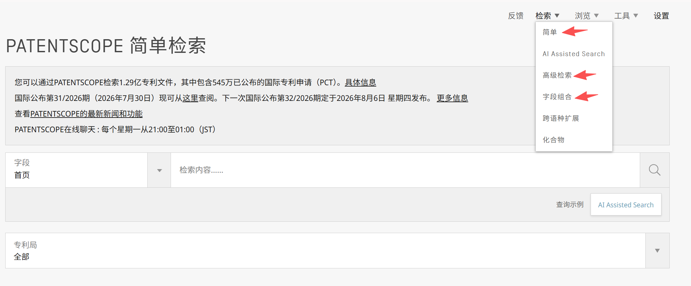
- 比如上面简单检索我输入“GLP-1”，出来的是：
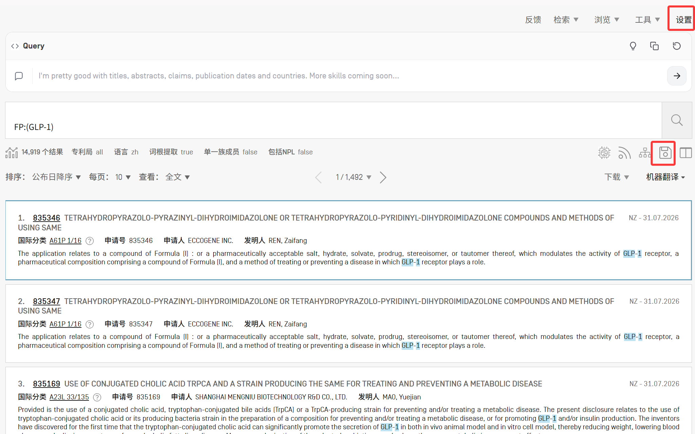
主要有两点：
1. 设置
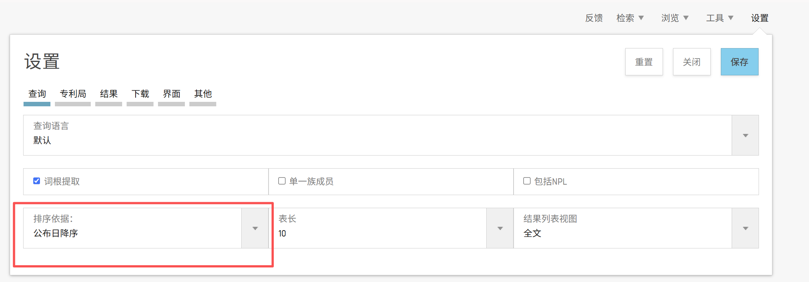
这样保存后，每次搜索出来都是按公布日降序，不需要再点一下。
与之类似的，还可以把表长改成更多，减少翻页。
2. 保存
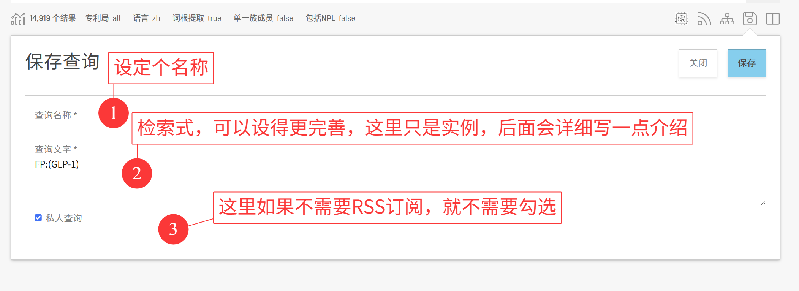
- RSS订阅：就是会把你查询的结果放在一个网址里面，然后这个网址可以导入到一些其他的文献管理软件或者什么订阅软件里，然后设定更新时间，自动更新查询的结果。不弄的话就不用管。
- 保存完后会出现如下的视图，下一次想检索就直接点这个放大镜就可以了，就不用再输入一遍。当然比较简单的检索，比如只有个”GLP-1”就没必要保存了，输一下也很快。
- 这个“保存的查询”我没有在WIPO的网站上找到入口，只有每次保存后会跳转过来，但是它的网站可以保存到收藏夹里，直接访问，我这里的网址是：https://patentscope2.wipo.int/search/zh/reg/user_queries.jsf
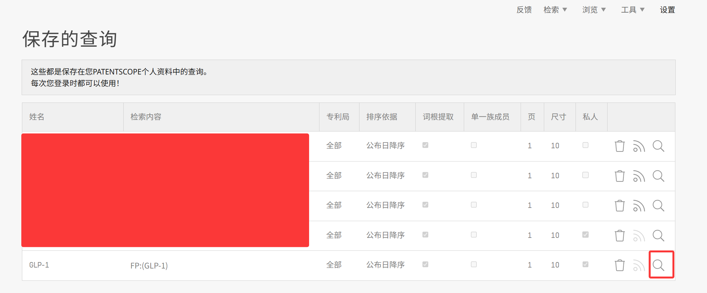
- 这个“保存的查询”我没有在WIPO的网站上找到入口，只有每次保存后会跳转过来，但是它的网站可以保存到收藏夹里，直接访问，我这里的网址是：https://patentscope2.wipo.int/search/zh/reg/user_queries.jsf
检索式-关键词
上面提到的检索式
1
FP:(GLP-1)
，FP就是首页的意思
- Gemini——
FP代表 Front Page（首页）。 当您输入例如FP:("GLP-1" AND obesity)时，搜索引擎只会在这篇专利的“首页”内容中去寻找这些词。 专利的首页通常包含：标题（Title）、摘要（Abstract）以及申请人/发明人等著录项目。 为什么常用FP？ 因为如果一个关键词出现在标题或摘要里，说明它是这篇专利的核心发明点。如果您全篇检索（ALL），只要说明书背景技术里随口提了一句 “GLP-1”，这篇专利也会被搜出来，会导致大量“噪音”。使用FP:是为了提高检索的准确率（查准率）。
- Gemini——
如果我们检索的时候选择的全文，这个检索式就会变成
ZH_ALLTXT:(GLP-1)，ZH是中文的意思，查的是中文全文（可能是因为我WIPO的网页语言设定的是中文），如果我把WIPO语言改成英文，搜索全文就会变成EN_ALLTXT:(GLP-1)。
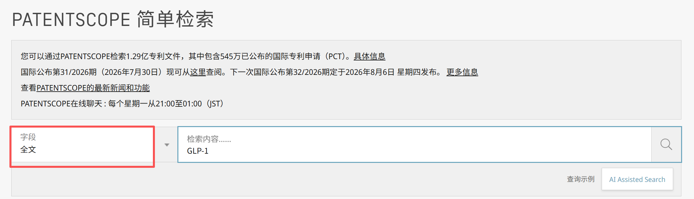

与之对应的还有
ZH_ALL、EN_ALL等，还有非常多，感觉我也没法每个都知道，有个办法是，点击“字段检索”，然后选择你感兴趣的字段，随便试一下，比如这里选择“申请人姓名或名称”
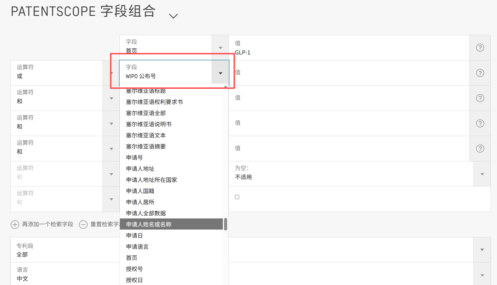
出来的检索结果如下，就知道这个对应的关键词是PA。
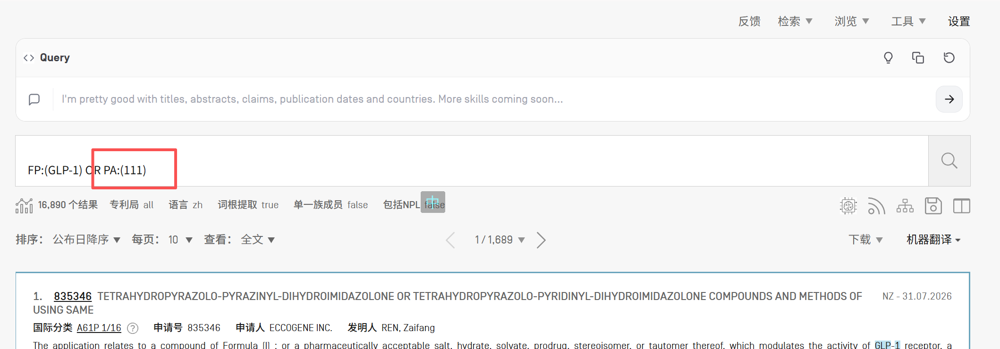
检索式-检索词
- 如果你在检索框里面自己输入一个关键词，比如
FP:，会出现一些下拉框的提示词：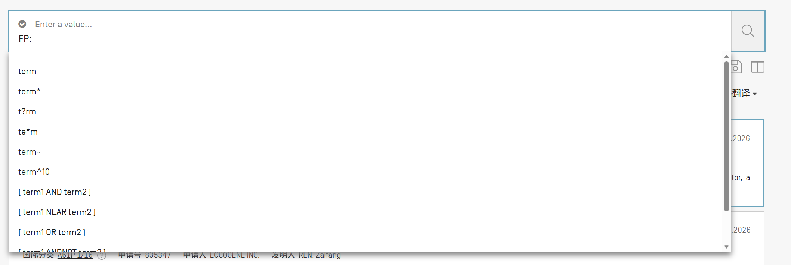
我通过AI咨询总结了一下：
Deepseek总结：
| 符号 | 名称 | 含义与示例 |
|---|---|---|
term |
普通单词 | 精确匹配你输入的词。例如 GIP 就只找“GIP”。 |
term\* |
多字符通配符 | 匹配0个或多个字符。例如 GLP-1* 可以匹配 GLP-1、GLP-1R、GLP-1 agonist 等。 |
t?rm |
单字符通配符 | 匹配任意一个字符。例如 AMY? 可以匹配 AMYR，但不匹配 AMYLIN。 |
te\*m |
中间通配符 | 在单词中间使用 *。例如 G*P 可以匹配 GIP、GAP、GLP 等。 |
term~ |
模糊检索 | 找到与 term 拼写相似的词。例如 Amylin~ 可能会找到 Amylin 的拼写变体。 |
term^10 |
权重因子 | 给 term 赋予10倍权重，使其在结果排序中更重要。例如 GLP-1^5 会让包含该词的专利排名更靠前。 |
[term1 AND term2] |
布尔运算符 | 搜索结果必须同时包含 term1 和 term2。 |
[term1 NEAR term2] |
位置运算符 | 查找 term1 和 term2 彼此靠近出现的文档。WIPO中可用 NEAR/N 指定距离，如 NEAR/10 表示两词间最多间隔9个单词。 |
[term1 OR term2] |
布尔运算符 | 搜索结果至少包含 term1 和 term2 中的一个。 |
[term1 ANDNOT term2] |
布尔运算符 | 搜索结果必须包含 term1，但不包含 term2。 |
"phrase" |
短语检索 | 精确匹配引号内的完整短语。例如 "Glucagon-like peptide-1"。 |
Gemini总结：
term\*：搜agonist*，系统会同时帮您把 agonist（单数）、agonists（复数）、agonism（激动作用）全部搜出来。搜amylin*可以顺带带出 amylin-like 等词。t?rm：搜GLP?1，这样无论中间是横杠还是空格，统统能命中。te\*m：词中间有字母变化。医药里用的相对少，比如sulfo*amide。term~和term^10：直接放弃使用。这两个主要用于泛文本搜索的相似度排名。在严谨的专利检索中，使用模糊搜索会引入海量的垃圾专利（噪音），我们通常用OR来穷举同义词，而不是靠系统瞎猜。[term1 NEAR term2]:用AND，靶点和“激动剂”可能隔了十万八千里。如果您用GLP?1 NEAR10 agonist\*，意思是这两个词必须在 10 个单词的距离内出现。
总结
- 比如我现在写的检索式：
1 | FP:(GLP?1 OR GIP OR GIPR OR amylin* OR AMY?R OR AMY) |
- 效果就是这样：
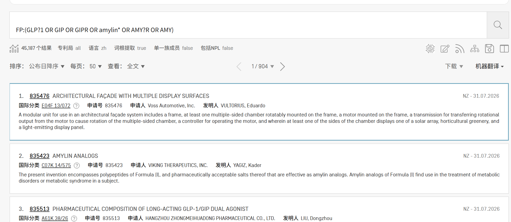
- 保存后的结果是这样：
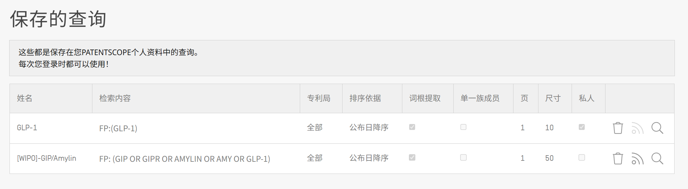
- 以后重复查询只需要再点一下这个放大镜就可以了。
- 除了比较宽泛的这样检索一下，如果有更精确的某个主题的需求，也可以这样保存，就可能需要用一些AND的逻辑，还有一些别的关键词来限制了
以上的这个宽泛的检索式，由于个人的知识范畴比较狭窄，理解不到更深，写得也不全面。请大家也不吝分享自己想到需要检索的方向。
- IC:(A61K OR A61P)
- 利用专利分类号（IPC/CPC）查全：这是防止漏检的关键一步。小分子药物相关的专利，通常会分在几个特定的分类号下：
- A61K：这个大类涵盖了医用、牙科或化妆用配制品。绝大多数药物制剂专利都会涉及这个分类
- A61P：这个子类专门用于标示化合物或药物制剂的特定治疗活性。它通常作为副分类号（secondary classification）出现，与A61K等主分类号结合使用。
- 利用专利分类号（IPC/CPC）查全：这是防止漏检的关键一步。小分子药物相关的专利，通常会分在几个特定的分类号下：